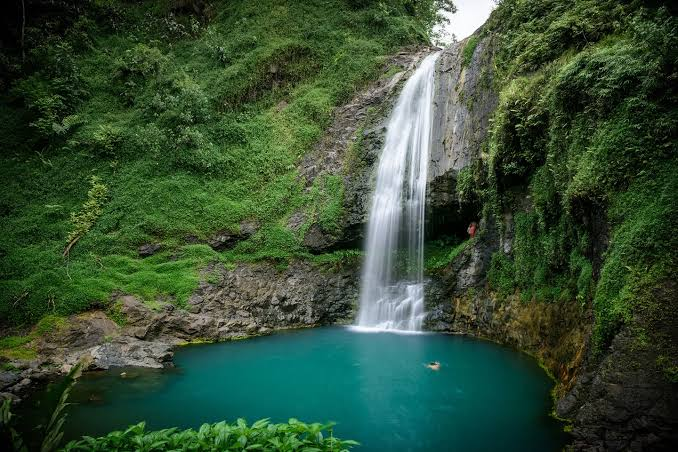
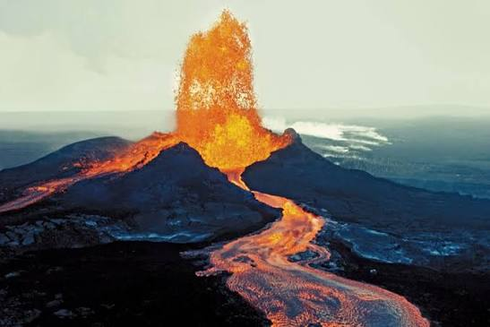
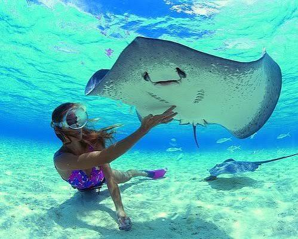
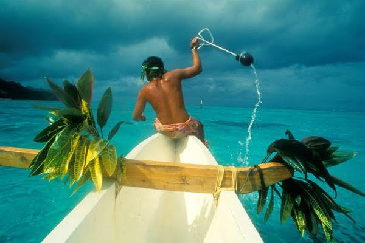

Enjoy crystal-clear waters and white sandy beaches surrounding Yellow Leaf Bay. Perfect for swimming, sunbathing, and photography.

Walk scenic hiking trails, discover tropical wildlife, and experience exciting zip-line adventures through the jungle.

Take a guided tour to Taniti's active volcano and enjoy spectacular panoramic views from the mountain.

Explore colorful coral reefs filled with tropical fish in Taniti's warm Pacific waters.

Spend a day fishing with experienced local guides while enjoying breathtaking ocean scenery.
View the island from above and experience unforgettable aerial views of beaches, rainforests, and mountains.
Learn about Taniti's culture, traditions, and fascinating island history through interactive exhibits.
Browse artwork created by talented local artists showcasing the beauty and culture of Taniti.
Visit local pubs, enjoy the island microbrewery, or dance the night away at Taniti's newest dance club.
Practice your swing at Taniti's new nine-hole golf course, opening soon.
Merriton Landing is one of Taniti's fastest-growing tourist destinations. Visitors will find restaurants, shopping, entertainment, pubs, walking paths, and many of the island's most popular attractions.
Whether you're looking for outdoor adventure, family fun, or peaceful relaxation, Taniti has something for everyone.
Plan Your Trip